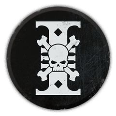

Deathwatch
| Deathwatch The Long Vigil | |
|---|---|
 The Inquisitorial I and skull of the Deathwatch Artwork © Games Workshop | |
| Founding | Mid-M32, after the War of the Beast |
| Founder | Lord Commander Koorland, with the Inquisitorial Representative Wienand |
| Allegiance | Imperium of Mankind; Ordo Xenos of the Inquisition |
| Role | Chamber Militant of the Ordo Xenos; alien-hunting |
| Headquarters | Watch fortresses across the galaxy; chief fortress Talasa Prime |
| Members | Veterans seconded from every loyal Chapter |
| Colours | Black; silver left pauldron; right pauldron in the colours of the warrior's Chapter |
| Motto | "Suffer not the alien to live" |
| First Watch Commander | Asger Warfist of the Space Wolves |
| Notable campaigns | War of the Beast; Jericho Reach; Octarius; the Chalnath Expanse |
The Deathwatch, also called the Long Vigil or the Long Watch, is an order of Space Marines that serves the Ordo Xenos of the Inquisition as its Chamber Militant. It exists to destroy alien threats to mankind. Unlike other Chapters, it does not recruit or train its own warriors: its members are veterans seconded from the Chapters of the Imperium, who serve a term in the Deathwatch before returning to their own brethren.[1][2]
The Deathwatch was founded in the 32nd millennium, in the aftermath of the War of the Beast (544–546.M32), when small teams of veteran Space Marines drawn from many Chapters had proved decisive against the Orks. It became the armed force of the Ordo Xenos when the Inquisition divided into its first ordos. Its warriors fight in small units called kill-teams and operate from hidden watch fortresses, each a sovereign domain under a Watch Commander, from which entire sectors may be cleansed of xenos before the wider Imperium knows that a threat existed.[3][1]
The opening of the Great Rift and the resurgence of the xenos at the end of the 41st millennium brought the Deathwatch near to breaking. It has since been reinforced by Primaris Space Marines of the Ultima Founding, and its watch fortresses on both sides of the Rift continue their vigil.[4]
History
[edit]Origins
[edit]In 544.M32 the greatest Ork invasion since the Ullanor Crusade, led by the warlord called the Beast, threatened Terra itself. During that war, the War of the Beast, the Lord Commander of the Imperium, Koorland, last of the Imperial Fists, devised a plan to use small kill-teams of veteran Space Marines to destroy the key assets of the Orks and finally the Beast itself. The first recruits were drawn from the survivors of the many Chapters that had suffered terrible losses in the assault on the Beast's capital world of Ullanor. They stood vigil over their fallen brothers, and from that vigil the order took its name.[3][1]
The High Lords of Terra were reluctant to sanction a force of Space Marines from many Chapters, so soon after the Second Founding had divided the Legions to prevent any one commander from holding such power. Koorland reached an agreement with the Inquisitorial Representative, Wienand, by which the Deathwatch would fall under the authority of the Inquisition, while a Space Marine would command it. The first Watch Commander was Asger Warfist, a Wolf Lord of the Space Wolves.[3]
After the War of the Beast the Inquisition divided into its first two ordos, the Ordo Malleus and the Ordo Xenos. The Deathwatch became the Chamber Militant of the Ordo Xenos, as the Grey Knights were of the Ordo Malleus.[3][2]
An older account, preserved in the Ordo Xenos and long accepted within the Deathwatch itself, tells that the order was founded at the request of a conclave of Inquisitor Lords, the Apocryphon Conclave of Orphite IV, which foresaw the coming of an age in which mankind would be consumed by aliens. The conclave asked an assembly of Chapter Masters for help, and together they swore an oath to create a Chapter of veterans to stand guard against that doom. The Logos Historica Verita regards the oath as genuine but places it after the War of the Beast, as a ratification of the order that Koorland had founded.[a][1]
The Age of the Shield
[edit]For most of the following nine thousand years the Deathwatch fought a hidden war. It kept a vigil against xenos races that had not yet revealed themselves, destroyed alien artefacts and settlements, and contained threats that, left unchecked, might have required whole crusades. Its successes are known only to the Ordo Xenos, and many are recorded only in the Book of Extinctions, in which the Deathwatch lists the alien species it has destroyed. In the late 41st millennium its watch fortresses fought the Tyranids of the hive fleets, the expanding T'au Empire, the Drukhari and the awakening Necrons. In the Jericho Reach, Watch Fortress Erioch became the base of a long war against the Tyranids, the Tau and Chaos.[1][2]
Era Indomitus
[edit]The opening of the Great Rift cut off many watch fortresses in the Imperium Nihilus and left others in the path of daemonic incursions. At the same time the xenos rose as never before. The Craftworld Aeldari struck with new fury, the Drukhari raided the dark worlds of the Nihilus, the Necron dynasties awoke in numbers, and splinter fleets of Hive Fleet Leviathan were scattered by Warp rifts across the Imperium. The Deathwatch was stretched to the breaking point and beyond.[4]
Relief came with the Indomitus Crusade. Primaris Space Marines in the black armour of the Deathwatch arrived directly from Mars, and new kinds of kill-team were formed around them. Some watch fortresses sent their kill-teams to train the garrisons of neighbouring worlds in anti-xenos doctrine, to strengthen the Imperium's defences where the Deathwatch alone could not reach. Others returned veterans to their Chapters while still sworn to the Long Vigil, as advisers in the war against the alien. When the wars of Octarius, where Orks and Tyranids had fought each other for years, broke loose after the Rift opened, the fortresses of the region called for help from across the Imperium.[4]

Organisation
[edit]Recruitment
[edit]Every loyal Chapter is bound by ancient oath to provide warriors to the Deathwatch when asked, and few refuse. Those chosen are usually veterans with long experience against the xenos. They are not told how long they will serve; the term may last a few years or many decades. On joining, a Space Marine repaints his armour black and takes a silver left pauldron bearing the symbol of the Deathwatch, but keeps his Chapter's heraldry on his right pauldron. When his service is ended he returns to his Chapter, bound by oath never to speak of what he did in the Long Vigil. Many never return. To be chosen is regarded as one of the highest honours a Space Marine can receive.[1]
Kill-teams
[edit]The Deathwatch does not fight in companies of the kind laid down by the Codex Astartes. Its basic unit is the kill-team, a small group of specialists from different Chapters, each bringing the skills and traditions of his own brotherhood. A kill-team may contain a Blood Angel, a Space Wolf, a Salamander and an Ultramarine, and its leader must forge them into a unit despite the rivalries between their Chapters. Several kill-teams form a Watch Company. Kill-teams are named by their role: some specialise in long-range fire, some in close assault, some in hunting particular species.[1]
Watch fortresses
[edit]The Deathwatch is based in watch fortresses, few of which appear in any Imperial record. Most are space stations, but some are whole worlds. Each is ruled by its Watch Commander, also called a Watch Master, and can order the destruction of a sector's alien population on his own authority. Smaller outposts, called watch stations, hold only a handful of warriors.[1]

- Talasa Prime, in the realm of Ultramar, is the headquarters and principal training world of the Deathwatch. It is a whole planet given over to the order, housing a fortress of the Ordo Xenos.
- Erioch, in the Jericho Reach of the Ultima Segmentum, is the fortress from which the Deathwatch has fought the long wars of the Reach.
- Eye of Damocles watches the border with the T'au Empire in the Damocles Gulf.
- Fort Pykman watches the Ghoul Stars from what is now the Imperium Nihilus.
- Castilos Nullifact watches for the Necron dynasties of the northern Ultima Segmentum.
- Damaroth, an alien-made ring around a moon older than the Imperium, oversees the Centaurus Arm.
Combat doctrine and wargear
[edit]The Deathwatch fights by precision. Its kill-teams strike at the commanders, synapse creatures, war engines and leaders of an alien force, aiming to break it before it can bring its numbers to bear. They are often transported by the Corvus Blackstar gunship, from which they can deploy directly into battle.[1]
Deathwatch armouries hold wargear unknown to most Chapters. Its bolters fire special-issue ammunition designed against particular species, such as Kraken penetrator rounds, Hellfire rounds that dissolve flesh, and Vengeance rounds against heavy armour. Its warriors also carry captured or adapted xenos technology, which no other Chapter would be permitted to use, by sanction of the Ordo Xenos.[1]
Relations with the Chapters
[edit]Most Chapters regard service in the Deathwatch as an honour, but some resent the loss of their best warriors and the secrecy that surrounds their service. The oath that binds a returning veteran not to reveal what he has seen sometimes causes friction with his Chapter Masters. Some Chapters, among them the Black Templars, which reject any compromise with the alien, have sent warriors only reluctantly. In the Era Indomitus, at least one watch fortress, Fort Pykman, attacked an Ynnari force that had come to the aid of an Imperial world, unaware in the darkness of the Imperium Nihilus that such alliances had been made.[4]
Timeline
[edit]| Date | Event |
|---|---|
| 544–546.M32 | During the War of the Beast, Koorland devises a plan to use kill-teams of veteran Space Marines against the Orks. |
| c. 550.M32[b] | The Deathwatch is founded. Asger Warfist of the Space Wolves becomes the first Watch Commander. |
| c. 551.M32[c] | The Inquisition divides into its first ordos. The Deathwatch becomes the Chamber Militant of the Ordo Xenos. |
| c. 560.M32[d] | The Deathwatch raids the laboratories of Fabius Bile and destroys his experiments in alien bioforms. |
| c. 570.M32[e] | Aeldari Harlequins bring the Shantoria System to the brink of civil war, and their activities are curtailed by the Deathwatch. |
| c. 580.M32[f] | Warp rifts threaten the Endasch Sub-sector, and the Deathwatch acts against the rival Ork warlords there. |
| c. 590.M32[g] | Aeldari Corsairs raid Fortress Omega, and the watch fortress defeats them. |
| c. 600.M32[h] | An Ur-Ghul migration from Commorragh is destroyed in the Shardmaze and the Mirrored Palace of Plenitia. |
| c. 940.M40[i] | A kill-team assassinates the Big Mek leading the WAAAGH! Dregsmasha on Atrophon. |
| c. 900.M41[j] | Watch Fortress Erioch begins its long war against the Tyranids, the T'au Empire and Chaos in the Jericho Reach. |
| 999.M41 | The opening of the Great Rift cuts off many watch fortresses in the Imperium Nihilus. |
| c. 000.M42[k] | The wars of Octarius break loose after the Rift opens, and the fortresses of the region call for help. |
| c. 012.M42[l] | Primaris Space Marines join the Deathwatch during the Indomitus Crusade, and kill-teams are formed around them. |
See also
[edit]Notes
[edit]- ^ The Deathwatch keeps both traditions. Neither account is dated precisely in the surviving records, and the Ordo Xenos has not ruled between them.
- ^ Estimated; no record gives an exact year. The Deathwatch is dated only to the mid-32nd millennium.
- ^ Estimated; no record gives an exact year.
- ^ Estimated; no record gives an exact year. The raid is recorded without a date.
- ^ Estimated; no record gives an exact year. The Harlequin plot is recorded without a date.
- ^ Estimated; no record gives an exact year.
- ^ Estimated; no record gives an exact year.
- ^ Estimated; no record gives an exact year.
- ^ Estimated; no record gives an exact year. The raid on Atrophon is recorded without a date.
- ^ Estimated; no record gives an exact year.
- ^ Estimated; no record gives an exact year.
- ^ Estimated; no record gives an exact year.
References
[edit]- ^ a b c d e f g h i j Codex Supplement: Deathwatch (9th Edition), pp. 5-27, 38-40, 48-49, 52-60. Games Workshop. War Zone Octarius - Book 1: Rising Tide (9th Edition), pp. 10, 30. Games Workshop.
- ^ a b c McNeill, Graham. Ultramarines: The Omnibus (novel). Black Library, pp. 382, 454-455, 474, 487-488. Annandale, David. The Hunt for Vulkan (novel). Black Library, Chs. 3-4, Epilogue.
- ^ a b c d Thorpe, Gav. The Beast Must Die (novel). Black Library, Ch. 3. Annandale, David. Watchers in Death (novel). Black Library, Ch. 3.
- ^ a b c d Guymer, David. The Last Son of Dorn (novel). Black Library, Chs. 17-18. Sanders, Rob. Shadow of Ullanor (novel). Black Library, Ch. 7.